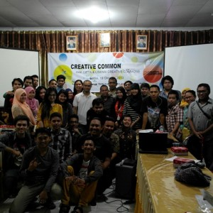

Gorontalo, Kota Ketiga Yang Dikunjungi oleh Creative Commons Indonesia

Creative Commons Indonesia bekerjasama dengan Akademi Berbagi kembali mengadakan Kelas Bersama untuk berbagi pengetahuan tentang Hak Cipta dan Lisensi Creative Commons. Gorontalo menjadi kota ketiga yang dikunjungi oleh Creative Commons Indonesia setelah sebelumnya mengunjungi kota Bali dan Makassar. Kelas Bersama di Gorontalo ini diadakan pada hari Sabtu, 19 Oktober 2013 bertempat di Sanggar Kegiatan Belajar (SKB), Kota Gorontalo.
Selain Ari Juliano Gema yang saat itu menjadi narasumber dari Creative Commons Indonesia, Akber Gorontalo juga kedatangan Pendiri dari Akademi Berbagi yaitu Ainun Chomsun. Ainun Chomsun yang akrab disapa Mba Ai ini menyampaikan visi dan Akademi Berbagi sebagai wadah pembelajaran yang menghubungkan orang-orang yang berilmu dan berwawasan dengan orang-orang yang ingin belajar dengan mudah. Setelah Ainun bercerita tentang suka duka yang ia temukan di Akademi Berbagi, kemudian Ari Juliano mulai menyampaikan paparan mengenai Lisensi Creative Commons.
Semua karya, baik dalam bentuk fisik seperti karya seni hingga karya yang hanya berupa tulisan di blog ternyata memiliki hukum tersendiri disetiap penggunaannya. Dan ternyata tidak semua orang paham tentang hal itu.
Kelas semakin seru ketika memasuki sesi tanya-jawab, banyak peserta yang ingin bertanya lebih jauh tentang ‘Lisensi Creative Common’. Hingga pada akhirnya tak terasa Azan Maghrib mulai terdengar berkumandang dari kejauhan. Setelah selesai menunaikan ibadah Maghrib, kelas dimulai lagi. Dan ternyata para peserta masih semangat untuk mengikuti kegiatan hingga selesai.
Mas Ari juga dengan senang hati menjawab pertanyaan-pertanyaan yang diajukan kepadanya. Ia tidak segan untuk menjelaskan secara menyeluruh tentang semua yang ia ketahui. Menyenangkan Kelas Akber Gorontalo hari itu, meski materi yang diberikan terkesan ‘berat’, suasana kelas tetap dibuat santai dan tidak terlalu formal seperti dalam seminar keilmuan atau kelas pembelajaran di sekolah-sekolah.
Hingga tak terasa, hari semakin gelap. Dan pada akhirnya kelas special #AkberCCI harus selesai. Tetapi meski kelas hari itu telah selesai, para peserta tetap diberikan kebebasan untuk bertanya lebih jauh, baik tentang Akademi Berbagi maupun tentang Lisensi Creative Common, para peserta bisa langsung mention di akun twitter milik Mba Ai (@pasarsapi) dan Mas Ari (@arijuliano).
Kelas Special #AkberCCI ditutup dengan sesi foto bersama oleh seluruh peserta, relawan, dan pemateri. Semua peserta terlihat senang setelah mengikuti kelas hari itu.
“Materinya asik..menambah pengetahuan dan wawasan. Thanks to @AkberGTO”, ungkap Sulhadani (@menhania), salah satu peserta dalam status twitternya.
| “Thanks buat @AkberGTO untuk kelasnya tadi, lumayanlah jadi tahu tentang hak cipta. | Thanks juga untuk mas @arijuliano dan mbak @pasarsapi.” tambah Erick (@errgghh_) yang juga salah satu peserta yang hadir kala itu. |
Hal yang menyenangkan apabila setiap kali kita bisa membahagiakan orang lain, dan juga dapat memberikan ilmu yang bermanfaat agar bisa dipelajari oleh semua orang.
“Karena Berbagi bikin Happy!”
Tags:
Oleh: Alifia Qonita Sudharto
19 Oct 2013Kategori:
Berita Terbaru
- Lokakarya Hak Cipta dan Lisensi Creative Commons di Pekanbaru
- Pengumuman Resmi: Hasil Akhir Training of Trainers Creative Commons Indonesia
- Literatur tentang Model Bisnis Terbuka "Made With CC"
- Data dan Artikel Ilmiah Terbuka dari PLOS!
- Konten Format Model 3 Dimensi Berilsensi CC di Platform Sketchfab